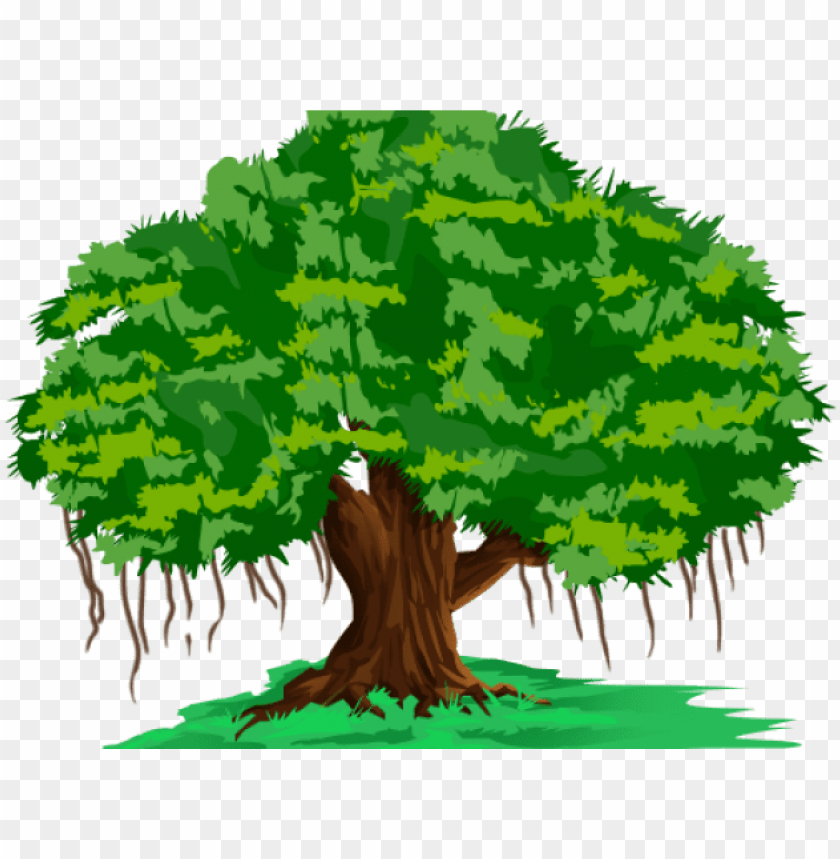

Banyan Tree

- Banyan tree is a huge tree with very extensive branches.
- It is said that at one time more than 10, 000 people can sit under its shade at one time.
- It is a evergreen tree, i.e, it never sheds leaves.
- It branches spread out and send trunk like roots to the ground in order to support itself.
- It grows to a height of more than Banyan Tree21 meters and lives for many years.
- The leaves are 10 -20 cm long and has many aerial roots.
- The leaves are broad, oval and glossy, White milky fluid oozes out of leaves, if broken.
- It can grow in to the gaint tree covering several hectares.